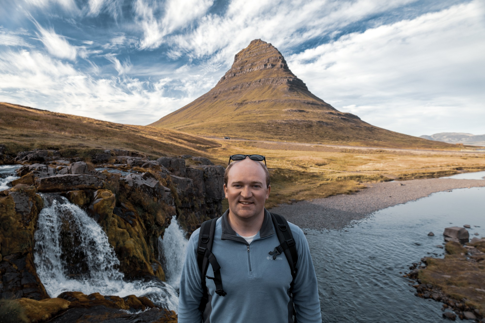

Collections

About
In 2023 I picked up a Canon R8 ahead of my first international trip to Iceland. Somewhere between the black-sand beaches, the waterfalls, and the countless puffins, I fell in love with photography.
Since then I've traveled across the United States and around the world chasing landscapes, wildlife, and the kind of light that makes you stop and look twice. That search has taken me from the trails of America's national parks to the coasts of Spain and Portugal to the streets of Japan.
Based in Charlotte, North Carolina.
Prints and digital files are available. Get in touch about any photo you see here.
Get in touch
For prints, digital files, or collaborations:
jkabalinphotography@gmail.com